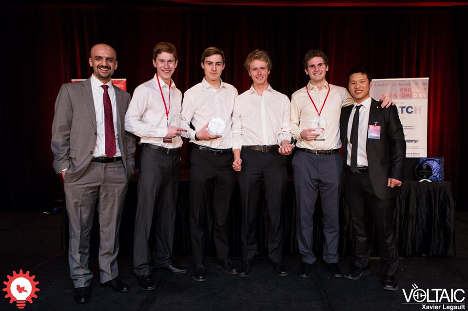

Research

Large Scale Neural-Simulations
Working with the Center for Theoretical Neuroscience at the University of Waterloo I experimented with possible optimization methods for biologically plausible nerual simulations.
I built networks which learned how to acheive tasks ranging from simple multiplication to compression of images. In addition I led an investigation
into optimizing very large models that could acheive complex tasks (like associative memory) by optimizing the sub-networks within them.
Segmentation of Aerial Imagery
While working for Heliolytics Inc. I pioneered the development of deep learning convolutional neural networks to segment aerial imagery.
The models developed automate the analysis of solar panels allowing analysts to work faster and focus on edge cases rather than easily analyzed panels.
Work
My full resume can be found here. or linkedin if you prefer.
Computer Vision and Machine Learning Researcher - Heliolytics
- Led development of deep learning systems to segment aerial imagery
- Designed novel image-to-image mapping systems for unique environments that makes use of spatial
information and image content
- Implemented signal processing algorithms using SciPy to extract image features from aerial imagery
Hardware Systems Engineer (co-op) - Heliolytics
- Independently developed deep learning systems to segment aerial imagery and automate analysis of solar panels
- Reverse engineered proprietary data formats to access raw data from historical archives
- Implemented custom camera drivers for a high resolution infrared capture system, removing the need for proprietary software and associated costs
Integration Engineer (co-op) - Nest Labs
- Load tested the real time system’s backend powering millions of devices by simulating the behavior of several distinct usage patterns and protocols with a combination of Scala, Gatling and Akka
- Developed tooling to analyze service logs in order to extract and visualize request information in an accessible and efficient way with Scala, The Play Framework, and Docker
- Centralized and simplified load test tooling to reduce setup and deploy time by containerizing the tools using Docker
- Lead a major overhaul of load testing tools to improve consistency and reflect production traffic
- Worked with team members to produce custom traffic distributions in order to stress test features and push the system past its limits
Mobile/Full-Stack Engineer (co-op) - Taplytics
- Implemented a SQLite database to reduce memory overhead by 80% when devices are offline
- Optimized SDK, resulting in speed increases of up to 150% for select features
- Implemented location and event-based push notifications using the Google Play Services location API (Android) and Core Location API (iOS)
- Developed feature to allow visual changes to arbitrary elements contained within ListViews or RecyclerViews after an app has been released
- Provided support and solved technical issues in real time for clients such as Tinder and Target
About
A Mechatronics Enginering Student by education but an AI developer by trade.
I was drawn to robotics by its ability to augment or replace the physical abilities of humans.
The concept of making people better at what they do or even replacing them entirely has always driven me to learn the inner workings of machines and processes.
What robotics does for a person's body, AI does for their mind. The ability to identify trends, make predictions, and learn is what seperates artifial intellegence from every piece of technology that has come before.
The minute I peared into this wonderful field I was drawn in and have been down the rabit hole ever since. I want to understand how the amazing systems we are able to build work, and to integrate knowledge from other fields to develop new methods and applications.
Deep learning has the potential to transform almost every aspect of human life, and I intend to be part of that transformation.
Awards

- Technical Speaking Competition 1st Place - Waterloo Enginering Competition
- President's Research Award - University of Waterloo
- Top 10 - Linkedin Hackathon 2016
- Junior Design Competition 1st Place - Canadian Engineering Competition
- Junior Design Competition 1st Place - Ontario Engineering Competition
- Junior Design Competition 1st Place - Waterloo Enginering Competition
- President's International Experience Award - University of Waterloo
- Queens Startup Summit 1st Place - Queens University
- President's Scholarship of Distinction - University of Waterloo